34tests
34passed
0failed
0APP BUGs
0problems
0warnings
0crashes
0freezes (ANR)
183screenshots
Automatic screen checks
Every screenshot is checked for these. Some are design choices; the examples show where.
| Check | Times | Examples |
|---|---|---|
| Text cut short with … | 5 | T03_LiveTvTest.browseCategoriesAndPlay__007_cat_A_very_long_ — A very long category name that keeps going and going to test how it f T08_ThemesTest.sizesLargeExtraLarge__002_size_ui2_text3_movi — Action · 18 movies T08_ThemesTest.sizesLargeExtraLarge__003_size_ui2_text3_movi — Action · 18 movies T08_ThemesTest.sizesLargeExtraLarge__004_size_ui2_text3_live — News · 13 channels T08_ThemesTest.sizesLargeExtraLarge__005_size_ui2_text3_live — News · 13 channels |
| Text drawn over other text | 1 | T03_LiveTvTest.zapping__003_number_entry.jpg — "17:34" / "7" |
Measurements
| What | Value |
|---|---|
| hugeListsLoadInTime · huge_live_count | 10000 |
| hugeListsLoadInTime · huge_live_load_ms | 264 |
| hugeListsLoadInTime · huge_movie_count | 50000 |
| hugeListsLoadInTime · huge_movie_load_ms | 1526 |
| hugeListsLoadInTime · huge_series_count | 5000 |
| hugeListsLoadInTime · huge_series_load_ms | 341 |
| zapping · memory_mb_after_zapping | 132 |
| zapping · memory_mb_before_zapping | 131 |
All tests
Screenshots
T03_LiveTvTest.brokenAndSlowChannels (2)


T03_LiveTvTest.browseCategoriesAndPlay (11)


⚠ Text cut short with “…” A very long category name that keeps going and going to test how it f


T03_LiveTvTest.catchUpFromGuide (3)


T03_LiveTvTest.favorites (4)


T03_LiveTvTest.guideMenusAndChannelList (5)


T03_LiveTvTest.searchInsideLiveList (2)


T03_LiveTvTest.tsOnlyAccountPlays (1)

T03_LiveTvTest.zapping (4)


⚠ Two texts drawn on top of each other "17:34" / "7"

T07_SettingsTest.glassLookOptions (24)


T07_SettingsTest.glassPlayerOptions (22)


T07_SettingsTest.homeAndBrowseLayouts (6)


T07_SettingsTest.lookOptions (9)


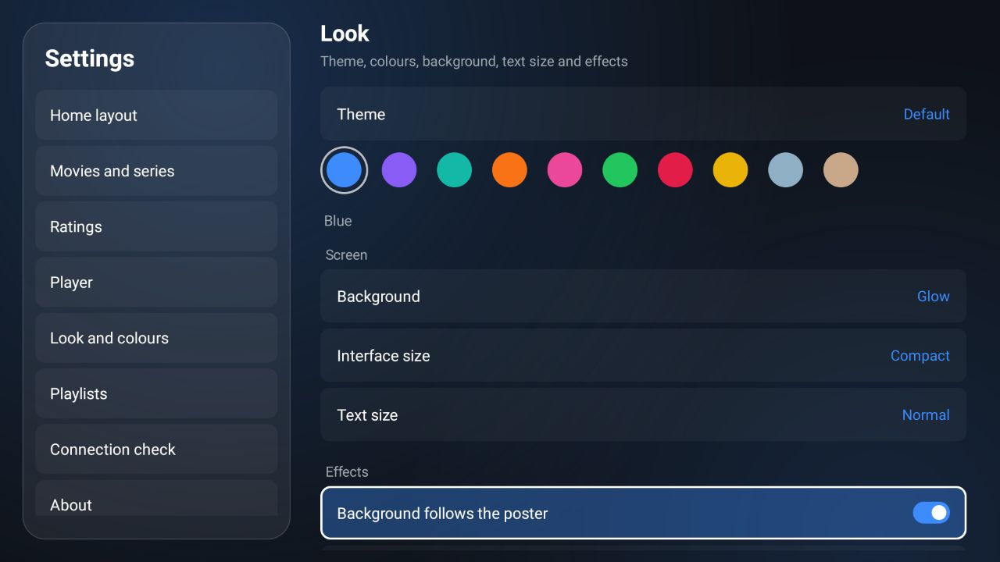


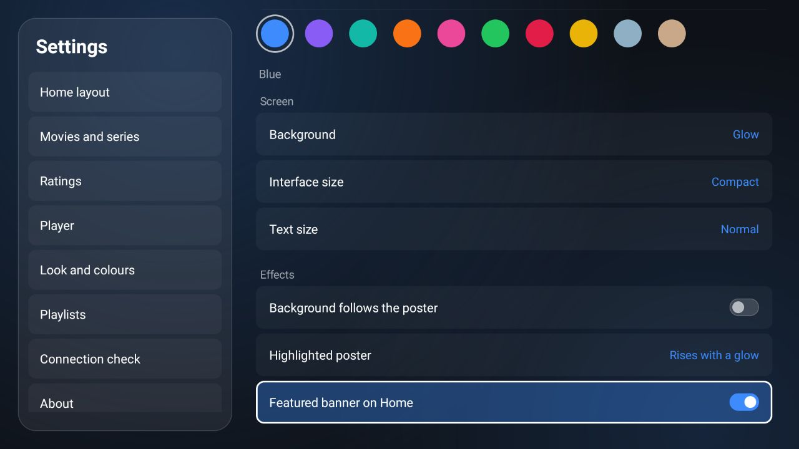

T07_SettingsTest.playerOptions (22)


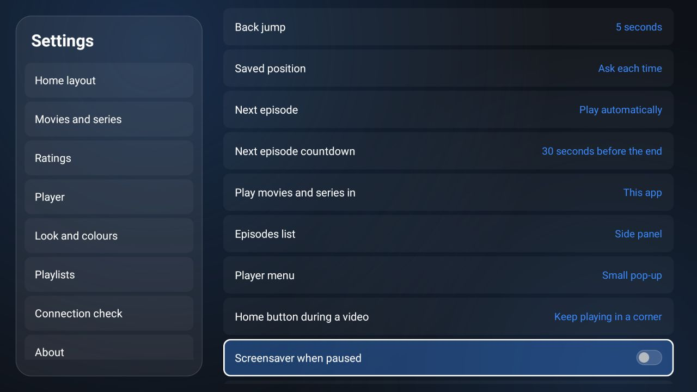


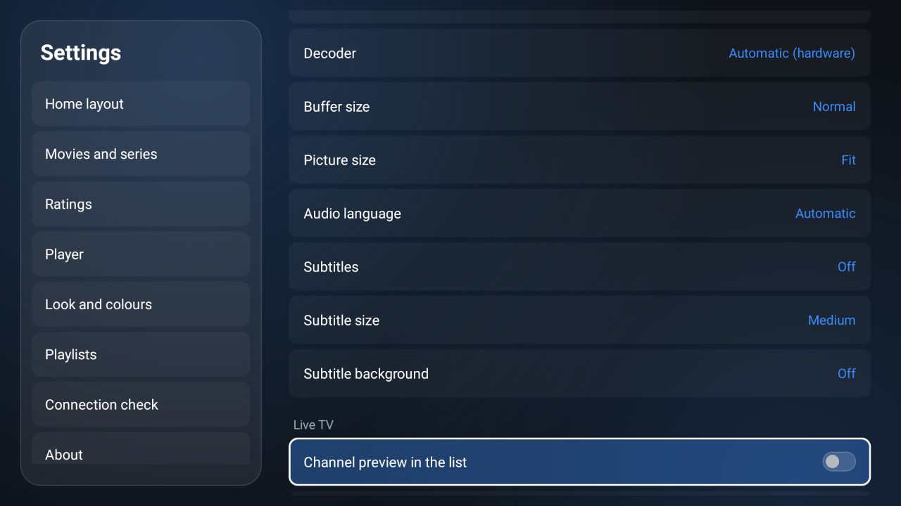

T07_SettingsTest.playlistsConnectionAbout (5)


T08_ThemesTest.removedThemesMoveToDefault (3)


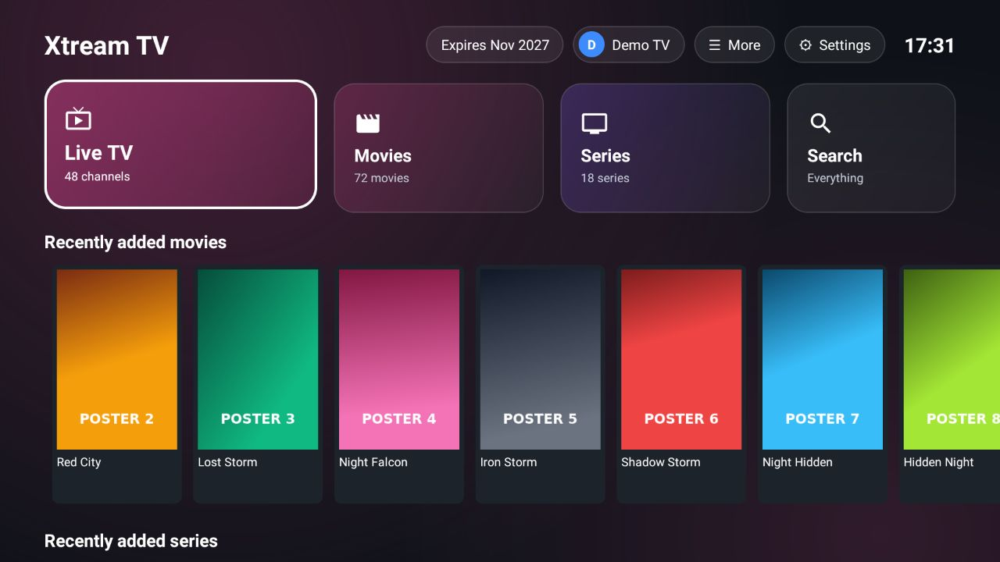
T08_ThemesTest.sizesLargeExtraLarge (11)


⚠ Text cut short with “…” Action · 18 movies

⚠ Text cut short with “…” Action · 18 movies

⚠ Text cut short with “…” News · 13 channels

⚠ Text cut short with “…” News · 13 channels


T10_BadNetworkTest.brokenServer (5)


T11_NewIn12Test.cardsPlayerMenuDefault (5)


T11_NewIn12Test.cardsPlayerMenuGlass (5)


T11_NewIn12Test.dockHome (16)


T11_NewIn12Test.quickDrawer (7)


T11_NewIn12Test.quickDrawerHasNoGuide (1)

T11_NewIn12Test.switchToDockFromSettings (3)


T12_New20Test.arrangeHomeRows (2)

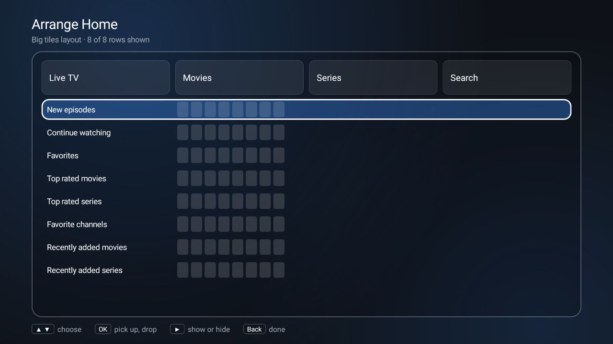

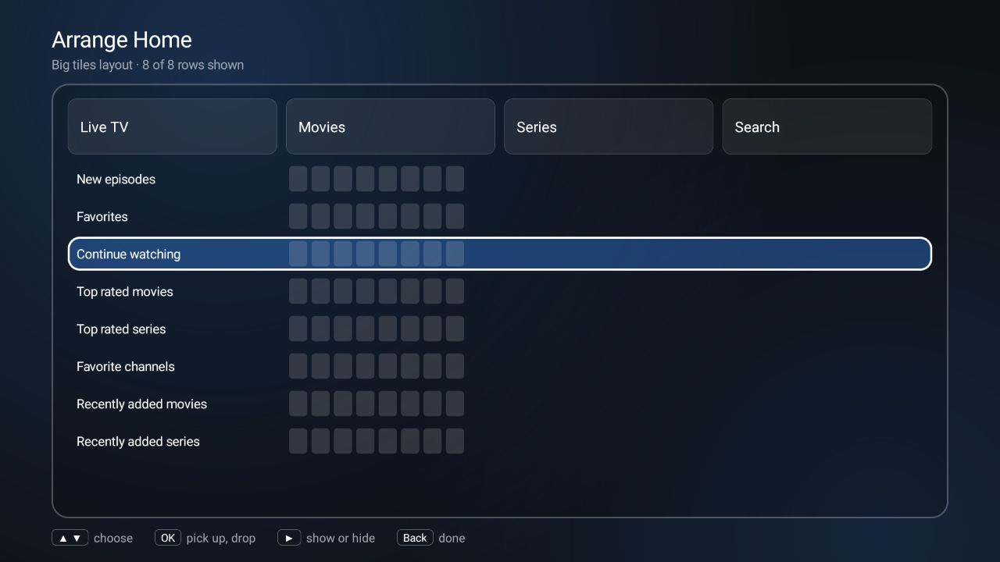
T12_New20Test.ratingsGetStarted (1)

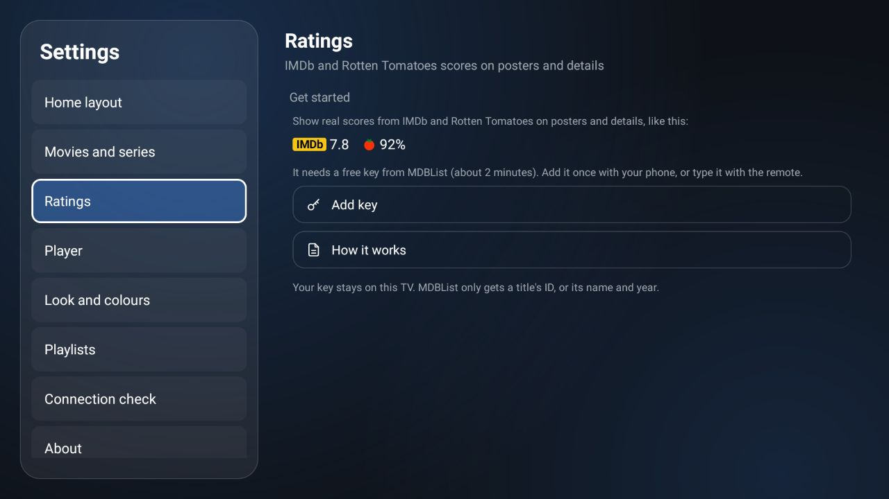
T12_New20Test.sortButton (3)

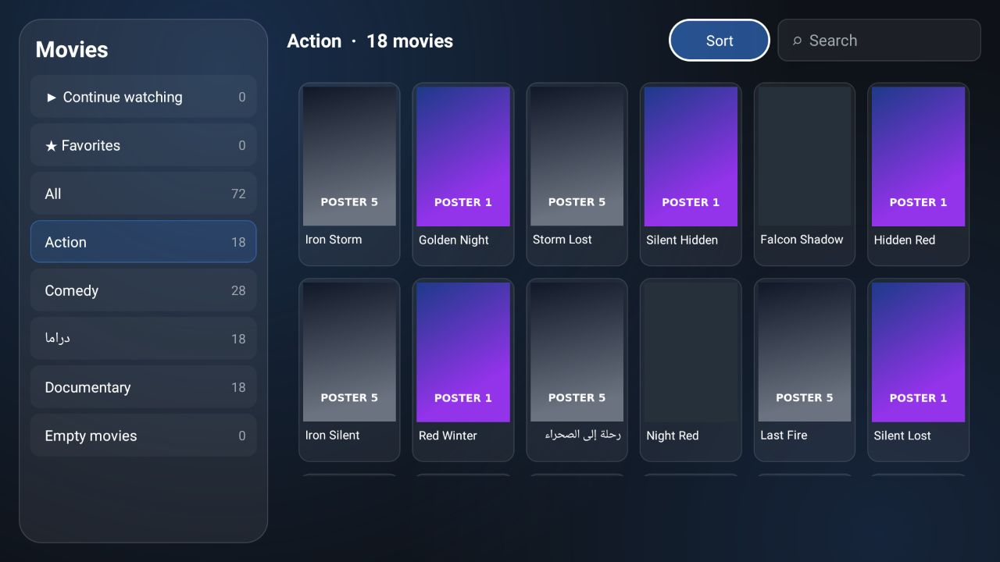

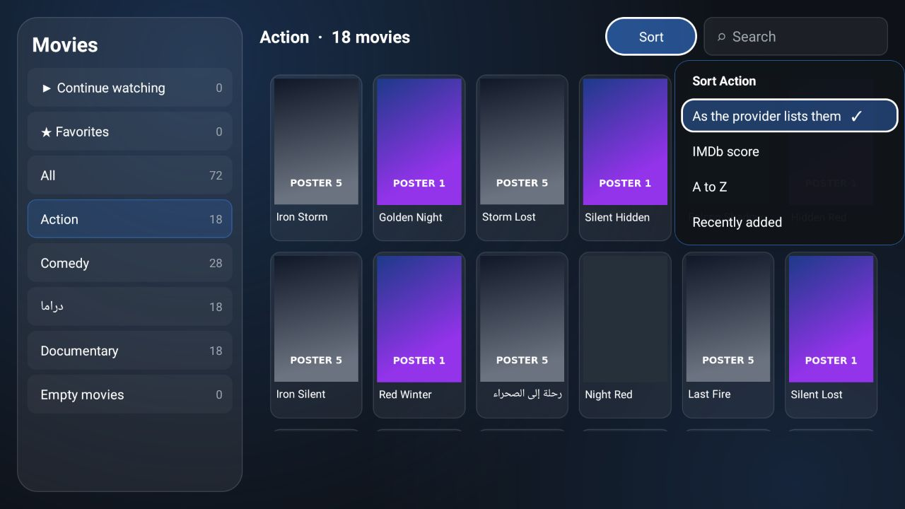

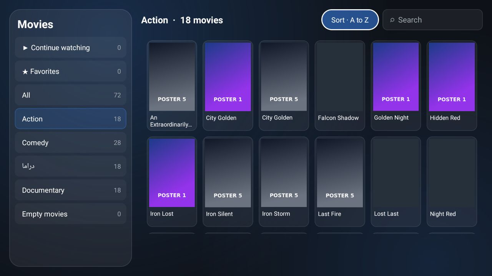
T12_New20Test.themedMessagePill (1)

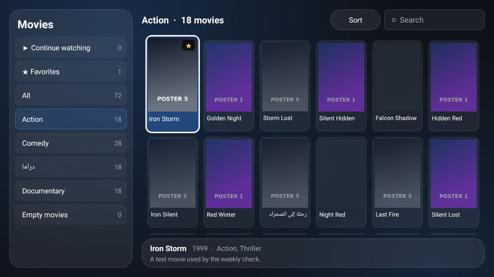